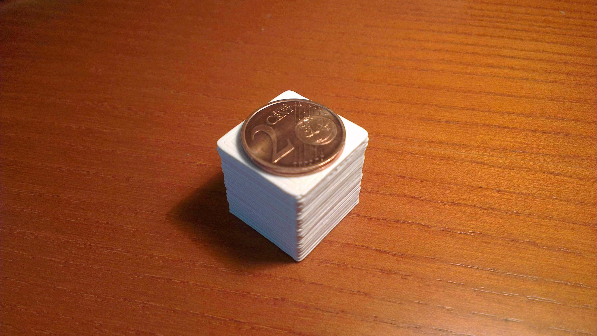

Return to nachoad.com or to projects | Volver a nachoad.com o a proyectos
EN This is my first 3D printer, called iAlonso Printr. It uses 3mm PLA plastic, it has 5 motors controlled by a computer; it can print 200mm x 180mm x 180mm objetcs (7.87 x 7.08 x 7.08 inches).
The video below shows the first object that was printed.
ES Esta es mi primera impresora 3D, llamada iAlonso Printr. Usa plástico de tipo PLA, y tiene 5 motores que están controlados por ordenador; puede imprimir objetos de 200mm x 180mm x 180mm.
En el vídeo de abajo podéis ver el primer objeto que he impreso de prueba.
EN The first object was a simple cube 20mm x 20mm x 20mm.
ES El primer objeto fue un cubo de 20mm x 20mm x 20mm.
EN I want to thank my father, Miguel Angel Alonso, for helping me to build the printer and giving me ideas to improve it. Thanks dad.
And also to Santiago López for give me the first printer parts and solve many questions.
ES Quiero dar las gracias a mi padre Miguel Angel Alonso por ayudarme a constuir la impresora y por darme ideas para mejorarla. Gracias papá.
Y a Santiago López por darme las primeras piezas de la impresora y resolver muchas preguntas.